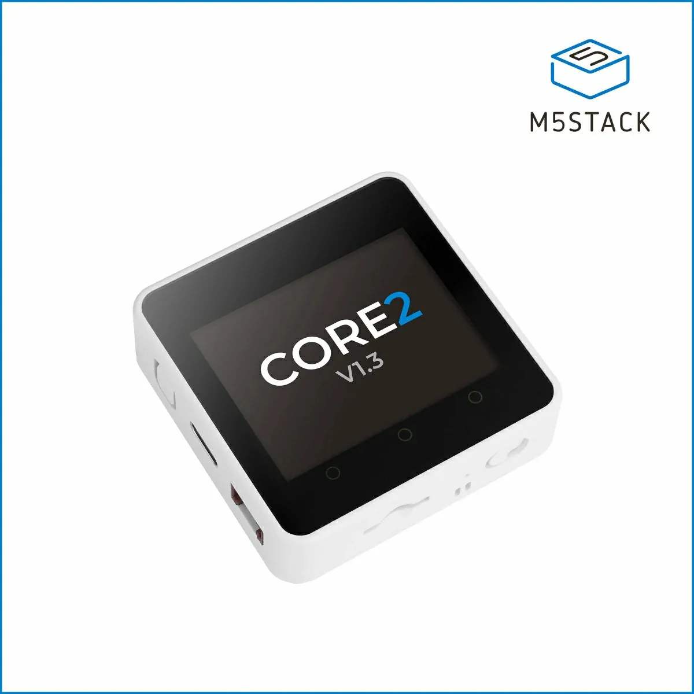

Core2 v1.3
M5Stack · M5Stack Core2 v1.3
Core2 v1.3 is a 2.0" 320x240 Capacitive touch ESP32 display board by M5Stack based on the ESP32 with 16MB flash, 8MB PSRAM.
Features, ports & interfaces
- Capacitive touch
- 8 MB PSRAM
- 16 MB flash
- Wi-Fi 4 (802.11 b/g/n, 2.4 GHz) – version from the ESP32 datasheet
- Speaker: NS4168
- Microphone: SPM1423
- Battery: 3.7V @ 500mAh
- RTC: BM8563
- IMU: BMI270
Specifications
| Parameter | Value | Source |
|---|---|---|
| Screen size | 2.0" | source |
| Resolution | 320x240 | source |
| Shape | Rectangular | |
| Touch | Capacitive | source |
| MCU / SoC | ESP32-D0WDQ6-V3 @ Xtensa® 32-bit LX6 dual-core processor, clock frequency 240MHz | source |
| MCU family | ESP32 | source |
| Flash | 16MB | source |
| PSRAM | 8MB | source |
| Wi-Fi | 2.4 GHz Wi-Fi | source |
| SKU | K010-V13 | source |
| Category | M5Stack (all-in-one controllers) | |
| Battery | 3.7V @ 500mAh | source |
| Dimensions | 54.0 x 54.0 x 16.5mm | source |
| Display | 2.0"@320 x 240 ILI9342C / ILI9342E | source |
| IMU | BMI270 | source |
| Microphone | SPM1423 | source |
| Power consumption | 5V @ 500mA | source |
| RTC | BM8563 | source |
| Speaker interface | NS4168 | source |
| Vendor | M5Stack | |
| Weight | 58.8g | source |
Official links & documentation
Files
Offline copies are available on the interactive page.
Notes
- Auto-added by the monthly scraper on 2026-11-24 from the official product page; values are copied verbatim from that page, fields it does not state are empty. Not yet hand-reviewed.